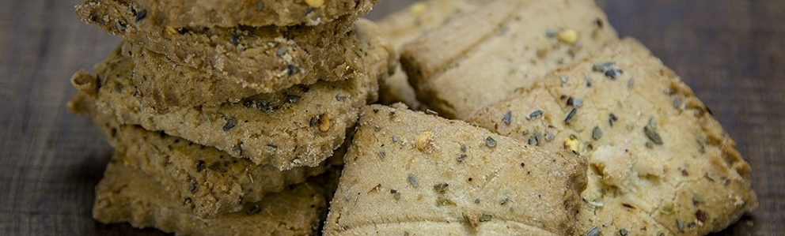

Estas galletas no tienen mucha ciencia y de hecho la receta es muy parecida a la de las galletitas dulces :)
En un bowl, vas a mezclar primero todo lo que son ingredientes secos: La harina, la sal, el queso parmesano, el orégano y el polvo de hornear o la levadura. Mezcla todo bien para que queden bien distribuídos tanto el orégano como el queso :)
Luego, vas a ir agregando poco a poco el aceite, los huevos y el poquito de agua, mezclando con una cuchara o paleta de madera con movimientos envolventes hasta que se empiece a separar de las paredes del bowl. Al principio se ve muy raro, pero luego empieza a tomar formita. Si sientes que queda muy líquida, échale un poquito de harina (que es lo más probable), si sientes que queda muy seca, échale un poquito mas de agua o de aceite.
Cuando ya veas que la mezcla se separa de las paredes del bowl, amasala muy bien hasta que quede homogénea y luego la haces bolita y la dejas reposando una media hora a temperatura ambiente, tapadita.
Cuando esté lista, puedes extenderla, con un poco de harina en el meson, hasta que quede de unos 3 o 4 mm de grosor y usas el cortador de tu preferencia. Para las chibi galletas que hice usé una tapita de jarra :3
Finalmente las pones a hornear, precalentando el horno, y luego metes la bandejita. En mi horno primero las puse a fuego alto y luego le bajé un poquito para que no se me quemaran. Pasaron como unos 20-25 minutos en el horno por tanda. La masa en teoría rinde bastante, así que salen bastantes galletitas :3
